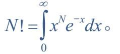
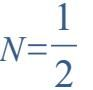
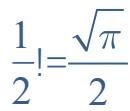
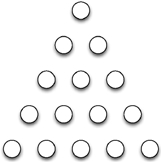
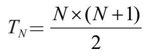
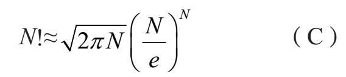

你可以用多少种方法将书排列在书架上？当然，这取决于你拥有多少本书。我们先从一个简单的例子开始。假设你的藏书只有三本，简单命名为A、B和C。
我们首先选择放在最左边的书。假设它是A。第一本决定后，有两种可能的方法来摆放剩余的书：ABC或ACB。所以当A是最左边的书时，有两种排列方式。
或者我们可能决定把B放在最左边。在这种情况下，可能的排列是BAC或BCA。或者我们可以把C放在最左边，产生两种排列：CAB或CBA。
总共有6种可能的方式来排列书籍：
ABC ACB BAC BCA CAB CBA
现在想象一下，我们再购买一本书：D。我们在书架上排列这四本书的方式有多少种？我们用于排列三本书的方法可以再次使用。首先考虑哪一本书放在最左边。假设它是A，其余的三本书（B，C和D）以6种可能的方式填充书架的其余部分——我们知道有6种可能，是因为我们已经知道排列三本书的方法是6种。
同样，如果把B放在最左边，那么有6种方式来放置其余的书（A，C和D）。最左边的是C或者D，那么其余书的排列方式也是6种。总共有6×4=24种排列方式。如下：
ABCD ABDC ACBD ACDB ADBC ADCB
BACD BADC BCAD BCDA BDAC BDCA
CABD CADB CBAD CBDA CDAB CDBA
DABC DACB DBAC DBCA DCAB DCBA
在我们跳到排列任意数量的书籍之前，我们先考虑一下排列五本书的情况：A，B，C，D和E。和前面的分析一样，我们考虑哪本书在最左边。如果是A，则其余四本书（B到D）被摆放在A的右侧。有多少种方法呢？这正是我们上一步计算过的问题：一共有24种方式。同样，如果B在最左边，其他书籍也可以用24种方式排列。同样，当C，D和E在最左边的时候，也是24种。这意味着总共有24+24+24+24+24=5×24=120方式排列这五本书。
还有另外一种思考五本书排列问题的方法。根据哪本书在最左边需要考虑五种不同的情形。一旦最左边这本书确定，那么还需要排列的就是剩下四本书。所以五本书排列问题的答案是四本书排列问题答案的五倍。用符号表示会使这个过程写起来更容易。
假设A5表示五本书排列问题的答案。也就是说，A5是在书架上排列五本书的方法的数量。通过考虑哪一本书在最左边，我们得出等式：
A5=5×A4
A4代表四本书排列问题的答案。
现在A4可以用类似的方法解决。有四本书可能被摆在最左边；对于每一种选择，我们都必须解决一个三本书排列的问题。因此：
A4=4×A3
我们对A3的分析表示为A3=3×A2。即使是（非常容易的）两本书的排列问题也使用这种分析：A2=2×A1，当然，A1=1。
全部放在一起，我们发现：
A5 =5×A4
=5×(4×A3)
=5×4×(3×A2)
=5×4×3×(2×A1)
=5×4×3×2×1=120
一般情形得到了解决。在书架上排列N本书的方法是：
N×(N–1)×(N–2)×···×3×2×1（A）
（A）的表达式被称为N的阶乘。阶乘用一个感叹号表示：N！。例如，6！=6×5×4×3×2×1=720。
10！等于多少？只要把数字1到10相乘就能得到
10!=10×9×8×···×3×2×1=3,628,800
对于已经学过微积分的读者来说，有另一个美观的公式：

这个公式对计算没有用处，但它允许我们进行魔幻般的操作，令
，就能推导出
。计算20！需要乘以二十个数字。计算100！是繁重的工作。有没有快速计算出答案的方法？
这是一个美观，但在计算方面毫无价值的想法。要计算10！，“所有”我们需要做的就是计算9！，然后将结果乘以10。因为
10!=10×[9×8×…×3×2×1]=10×9！
对于任意值N，我们可以概括出：
N!=N×[(N–1)×(N–2)×…×3×2×1]
由此得出这个公式：
N！=N×（N–1）！（B）
公式（B）是可爱的，但它对于计算20！没有多大用处。它告诉我们要先计算19！并把结果乘以20，实际上，它告诉我们该如何计算19！：首先计算18！然后乘以19。其实，这不过是巧妙掩饰了我们最终还是要将数字1到20相乘的事实[h]。
这些数字被称为三角形数，因为它们通过这种结构图计算圆圈的数目：

我们希望有一个捷径。有什么方法可以减化过程？我们可以通过考虑三角形数（triangular numbers）来得到一些启发：数字的形式是
1+2+3+···+N
例如，第五个三角形数是1+2+3+4+5=15。我们用TN代表的第N个三角形数定义为
TN=N+(N–1)+(N–2)+···+3+2+1
例如，
T10=10+9+8+7+6+5+4+3+2+1=55
这看起来就像是阶乘，但用加法替代了乘法。有没有办法计算T10而不必将十个数字相加呢？
答案是令人愉快的，推理过程简单而优雅。我们可以按照升序和降序写出T10的和，如下所示：
1 + 2 + 3 + 4 + 5 + 6 + 7 + 8 + 9 + 10
10 + 9 + 8 + 7 + 6 + 5 + 4 + 3 + 2 + 1
如果我们把所有这20个数字相加，结果将是T10的两倍。但是不要横向相加这些数字，我们先将它们纵向相加：
1+2+3+4+5+6+7+8+9+10
10+9+8+7+6+5+4+3+2+1
11+11+11+11+11+11+11+11+11+11
最后一行有10个项都等于11，所以和就是10×11=110。但是由于这是T10的两倍，我们得出T10=110÷2=55。
你可以用一个计算器在不到一分钟的时间检验这个结果！将1到10的所有数字相加，并确认和为55。
一般来说，我们可以这样计算。为了找到TN我们按照升序和降序写出1到N的数字，然后纵向相加：
1+2+3+···+(N–2)+(N–1)+N
N+(N–1)+(N–2)+··+3+2+1
(N+1)+(N+1)+(N+1)+···+(N+1)+(N+1)+(N+1)
底行有N个项，每个项等于N+1；因此这
些数字的和是N×（N+1）。由于这是TN的“双
份”，所以

要计算T100，我们不必将一百个数字相加。只需要计算
100×101÷2=5050
就能得出答案。
有没有类似的优雅的公式来计算阶乘？可悲的是，没有。然而，得益于詹姆斯·斯特林，我们有一个好的近似公式

詹姆斯·斯特林（James Stirling）是一位生活在18世纪的英国数学家。
这个公式涉及其他章节讨论的两个非同一般的数字：π≈3.14159是一个圆的周长与其直径之比（第6章），e≈2.71828是欧拉数（第7章）。
斯特林公式在计算更大的N值时精确度更高。例如，对于N=10，我们知道10！=3628800，经公式（C）算出3598695.6187，误差仅为0.8%。
对于N=20，我们有这些结果：
20！=2,432,902,008,176,640,000
公式（C）=2,422,786,846,761,133,393.683907 5390
误差约0.4%。如果我们跳到N=1000，1000！和公式（C）之间的相对误差小于0.01%。
数字145被称为一个阶乘和数（factorion），因为它具有以下有趣的属性。如果我们将它各位数字的阶乘相加，会得到该数字本身：
1！+4！+5！=1+24+120=145
数字1和2也是阶乘和数（但0不是）。还剩下唯一的一个阶乘和数。看看你能不能找到它。
如果不编写计算机程序，答案很难得出。答案在下一页。
许多人会非常冲动地回答：0！是零！（第二个感叹号是强调。）这似乎是有道理的，因为N！的第一个因数是N，任何数乘以零都必然等于零。然而，数学家将0！定义为1，我们通过一些阐释来结束本章。
在第1章中，我们遇到了一个空积的概念——一个没有项的乘法问题[1]。零的阶乘是空积的一个例子。对于任何数字N，我们注意到N！有N个项。这对正数N来说是明确的，当N=0时也是如此。从某种意义上说，N！就是我们把所有从1到N的整数相乘。在N=0的情况下，不存在这样的数字，因此该乘积是空的。按照惯例，空积等于1。
下面是定义0！为1的另一个基本原理。如果我们将N=1代入公式（B）
N！=N×（N–1）！⇒1！=1×0！
既然1！=1，必然得出0！等于1。
最后，让我们回到我们的书架。如果我们没有书，排列N本书的方式有几种？我们只有一种排列方式：让书架空着。
如同数字145，40,585也是一个阶乘数，因为它等于其各数字阶乘的总和：
4!+0!+5!+8!+5!=24+1+120+40320+120=40,585。